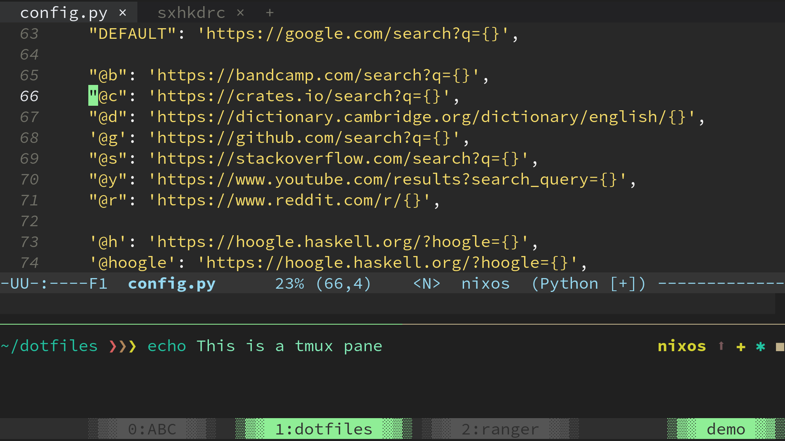
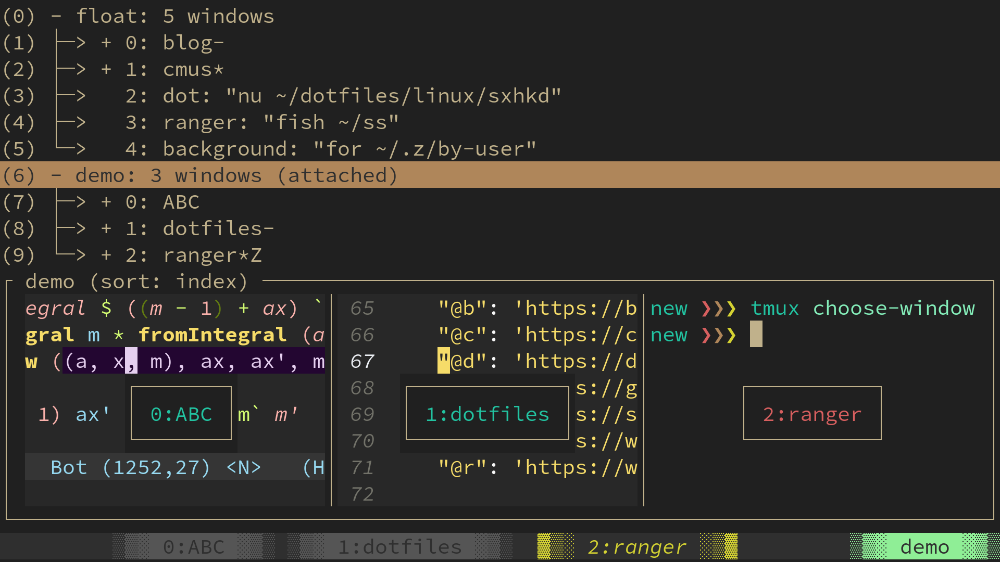
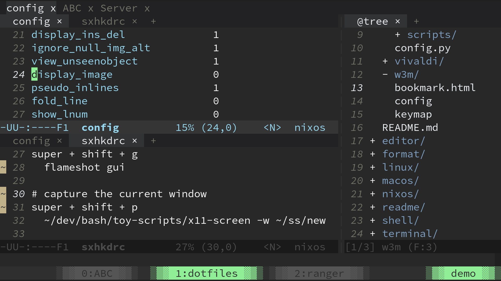
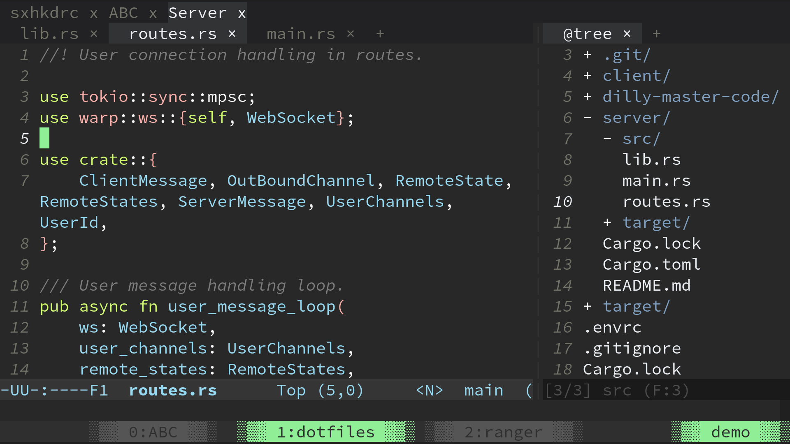
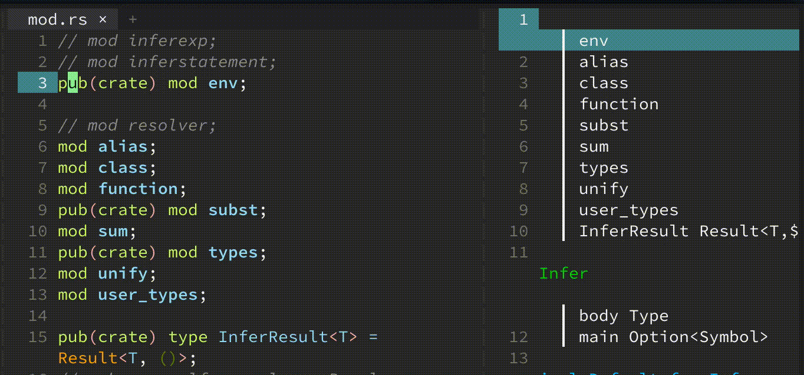
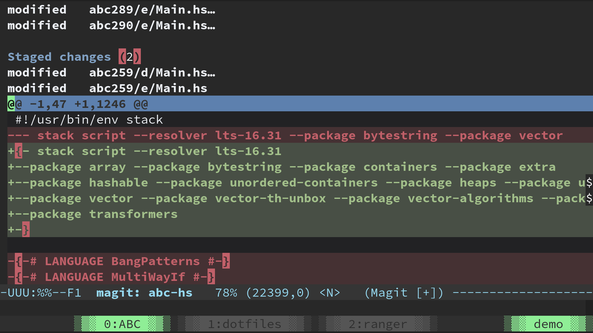
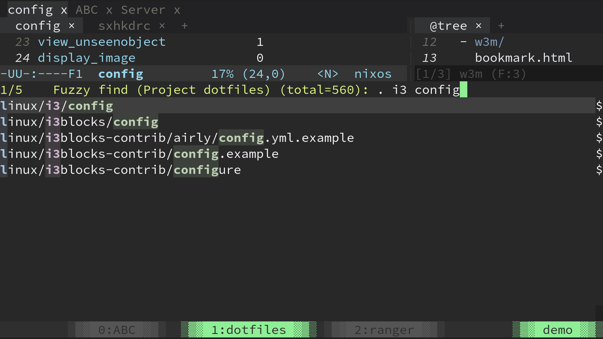
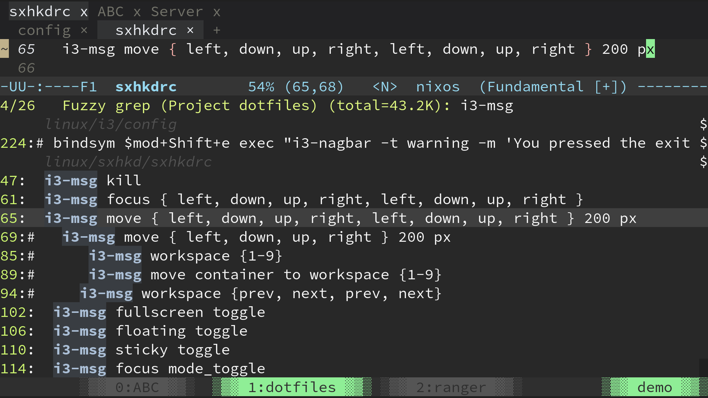

背景
僕はエディタに拘りがありません。 Vim キーバインドさえあれば何でも良いのです。
しかし Emacs の workflow は一皮剥けている気がします。ここでは『多重化』の観点から僕の Emacs を紹介します。
| エディタ | 僕にとっては |
|---|---|
| VSCode | Notepad++++++++ |
| Sublime | Notepad++++++++ |
| Vim | Nodepad++++++++++++ |
| Emacs | Notepad++++++++++++++ |
主な workflow
僕の環境は多重化に力が入っています。多重化には 3 段階あります。
- 画面分割
- マルチタブ
- マルチ・マルチタブ
僕は Emacs をターミナルから起動するので、ターミナルの多重化から説明します。
ターミナルの多重化
tmux を使うと、ターミナルの画面分割ができます。マルチタブ機能もあります。

Figure 1: tmux で画面分割
画面下部の ABC, dotfiles, ranger というのがタブです。マルチタブを持つ session も多重化できます。マルチ・マルチタブです。

Figure 2: demo session の下に ABC, dotfiles, ranger タブがぶら下がっている
Emacs の多重化
ターミナルの中で Emacs を起動します。 Emacs の中でも画面分割が可能です。

Figure 3: 画面分割
最上部の config, ABC, Server にお気づきでしょうか。これらがマルチ・マルチタブであり、プロジェクトの切り替えに相当します。
Server タブに切り替えてみました:

Figure 4: マルチ・マルチタブ
Emacs のウィジェット
サイドバーにはプログラムのアウトラインを表示することもできます。僕はハードコアな環境を求めているわけではなく、リッチで優しい UI が好きです。

Figure 5: imenu (アウトライン表示)
ついでに magit にも触れておきます。 magit と言えば Emacs の killer feature です。 git add を始め、 rebase, squash / fixup のような複雑な操作も比較的簡単にガイドしてくれます。

Figure 6: magit (Git クライアント)
Emacs における検索
ファジー検索とプレビュー機能も欠かせません。 Emacs もこうした機能は得意です。

Figure 7: ファイル検索 (find-file)

Figure 8: grep
まとめ
僕はエディタの表面的な部分に関心があったので、結果的に Emacs に流れました。 Emacs は Notepad++++++++++++++ として使っています。
なぜ他のエディタを使わないのか聞かれたときは、上記のような多重化機能が他のエディタには無い (と認識している) からと答えるつもりです。